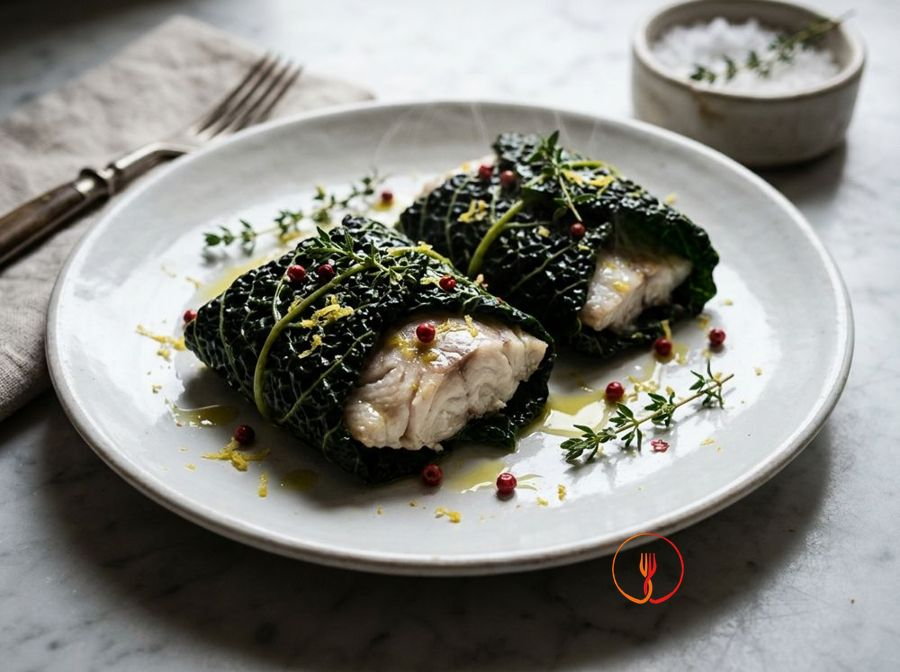

Steamed sea bream parcels wrapped in cavolo nero leaves
A light and elegant main course where the fish is protected and infused with flavour by the cavolo nero leaves during steaming.
This refined main course uses Tuscan kale leaves as a natural wrap to protect the delicate sea bream fillets. Steaming preserves the fresh aromas of thyme and lemon, resulting in a juicy texture and clean flavor.
Ingredients
- Skinless sea bream fillets4 (approx. 150g each)
- Large cavolo nero leaves12
- Lemon (zest and juice)1
- Fresh thyme2 sprigs
- Extra virgin olive oil4 tbsp
- Unrefined sea saltto taste
- Pink peppercornsto taste
Allergens
Fish
Method
- Begin by selecting 12 large cavolo nero (Tuscan kale) leaves and, using a sharp paring knife, score the base to remove the bottom part of the central rib, which is too tough for steaming. Proceed very gently so as not to tear the leaf, trying to keep the tender upper part intact. This step will allow you to fold the leaves easily without them snapping when you close the parcels. By the end, you should have clean, thinned leaves ready to be softened by the heat. Chef's tip: do not throw away the removed ribs; you can finely chop them and use them to enrich a minestrone or a bean soup.
- Bring a large pot of lightly salted water to the boil and prepare a bowl of iced water nearby for a thermal shock. Submerge the kale leaves in the boiling water for about 3 minutes over medium heat until they are tender but still elastic to the touch. Drain them immediately with a slotted spoon and plunge them into the iced water to stop the cooking and fix the emerald green colour. You will obtain flexible, vibrant leaves, essential for an impressive presentation. Chef's tip: ensure the water is truly icy, as it is the sudden temperature drop that prevents the leaves from turning yellow.
- Remove the leaves from the iced water and spread them carefully on a clean tea towel or kitchen paper, patting them gently to remove any residual moisture that could compromise the parcel's seal. Meanwhile, take the 4 sea bream fillets (about 150g each) and, with a very sharp knife, split them in half lengthwise following the natural line of the flesh. You should have 8 similarly sized pieces, which will be easier to wrap and cook evenly. The fish must be dry to the touch to allow the aromatics to adhere correctly to the fibres. Chef's tip: if the fillets still have small bones, remove them now with kitchen tweezers following the direction of the flesh to avoid damaging it.
- Place the sea bream pieces on a flat plate and season them evenly with a pinch of integral sea salt, slightly crushed pink peppercorns, and the grated zest of an organic lemon. Lightly massage the flesh with your fingertips so the flavours penetrate deeply without over-stressing the fish. The lemon scent and the spicy note of the pink pepper should be present but balanced, enhancing the delicacy of the sea bream without overpowering it. At the end of this step, the fish will appear glossy, fragrant, and ready for its vegetable casing. Chef's tip: only grate the yellow part of the lemon peel, as the white pith is bitter and would make the dish unpleasant.
- Now proceed to assemble the parcels: lay out 3 kale leaves for each portion on your work surface, overlapping them slightly to form a solid base without gaps. Place two of the seasoned sea bream pieces in the centre and fold the edges of the leaves inwards, creating a tightly sealed and compact package. Ensure the fish is completely enclosed to protect it from direct heat and keep its juices intact during cooking. You will have 4 elegant, symmetrical packages ready to be transferred to the steamer. Chef's tip: if the leaves seem too slippery, you can secure the parcel with a piece of kitchen twine or a toothpick for safety.
- Prepare the steaming pot by filling it with about 3-4 centimetres of water and add the 2 sprigs of fresh thyme to gently flavour the steam that will rise towards the fish. Bring the water to a gentle simmer over medium heat and place the steamer basket on top, checking that the boiling water never directly touches the bottom of the basket. You will immediately smell the herbaceous aroma of the thyme, creating the ideal environment for healthy and fragrant cooking. The steam must be constant but not too violent. Chef's tip: you can also add a leftover slice of lemon to the water to give an extra note of citric freshness to the steam.
- Carefully lay the 4 parcels into the steamer basket, making sure not to overlap them too much to allow the steam to circulate freely, then cover with a tight-fitting lid. Steam for about 10-12 minutes over medium heat, monitoring that the water does not dry out completely during the process. The heat must gently penetrate through the kale leaves, cooking the fish by natural conduction without drying it out. When finished, the kale will be very tender and the sea bream inside will be opaque white, juicy, and perfectly flaky. Chef's tip: never lift the lid during the first 8 minutes of cooking to avoid sudden temperature drops that would prolong the cooking time.
- While the parcels finish cooking, prepare the final emulsion by pouring the filtered lemon juice, 4 tablespoons of extra virgin olive oil, and a pinch of salt into a small bowl. Whisk vigorously with a small hand whisk or a fork for about a minute until you obtain a thick, opaque, and slightly creamy sauce. The emulsion should be well-combined, with a perfect balance between the acidity of the citrus and the velvety structure of the quality oil. This cold dressing will enhance the natural sapidness of the steamed fish. Chef's tip: add a single tablespoon of hot water from the steamer to the emulsion to make it even smoother and glossier.
- Gently remove the parcels from the basket using a spatula to avoid damaging the kale wrapping and place them on individual serving plates. You can choose to serve them whole to maintain the heat or cut them diagonally in half to show the beautiful colour contrast between the dark green of the kale and the snowy white of the fish. Immediately drizzle the surface with the lemon emulsion and finish with a few whole pink peppercorns for a refined decoration. The dish must be served very hot, releasing a fresh scent of the sea, thyme, and lemon. Chef's tip: warm the serving plates in the oven at 50°C for a minute before serving, so the fish won't suffer a thermal shock when moving from the steamer.
Tips
- Blanch the kale leaves for just a few seconds and chill immediately in ice water to lock in the bright green color.
- Trim the thickest part of the central rib to make the leaves more flexible and easier to roll.
- Use a bamboo or steel steamer basket for even and gentle cooking of the fish fillets.
Variations
- Enhance the filling with some chopped sun-dried tomatoes for a savory Mediterranean twist.
- Replace the pink peppercorns with fresh grated ginger for a slightly spicy and aromatic kick.
Nutrition facts (estimate)
| Per serving (189 g) | Per 100 g | |
|---|---|---|
| Energy | 1084 kJ / 259 kcal | 573 kJ / 137 kcal |
| Protein | 33 g | 17 g |
| Carbohydrates | 3.0 g | 1.6 g |
| of which sugars | 0.7 g | 0.4 g |
| Fat | 13 g | 6.8 g |
| of which saturates | 1.9 g | 1.0 g |
| Fibre | 2.2 g | 1.2 g |
| Salt | 0.6 g | 0.3 g |
AI estimates based on average CREA / USDA data: indicative only, not a substitute for medical or dietitian advice.
Open the recipe in the app for the shopping list, ingredient sheets and nearby shops.